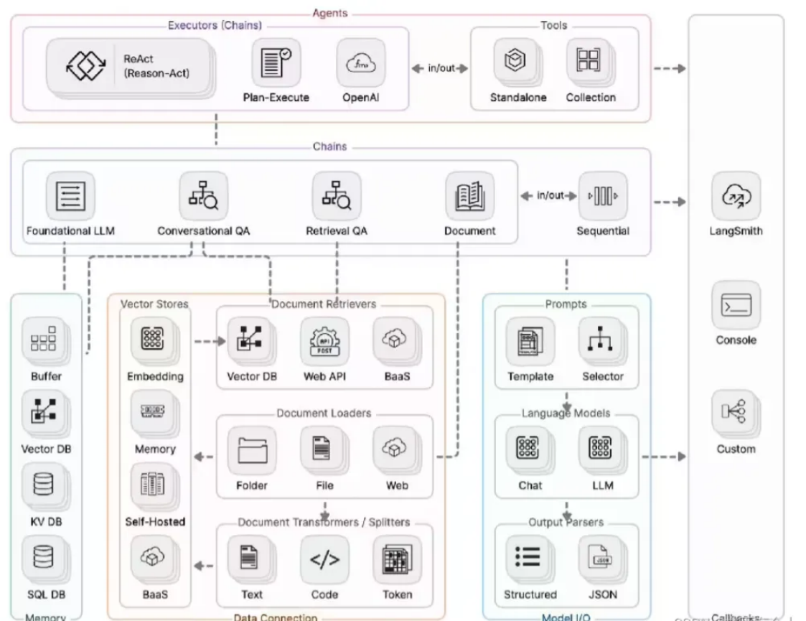

LangChain
在当前的 Agent 工程实践中，直接调用大语言模型 API 已经很难满足复杂应用的需求。真实系统往往 涉及 多步骤推理、外部工具调用、数据检索、状态管理以及多轮对话控制，如果完全依靠开发者手动 编排逻辑，系统复杂度会迅速上升。因此，Agent 开发通常需要借助专门的框架来完成流程组织与能 力集成。
在众多 Agent 开发框架中，LangChain 是最早被广泛使用的一套工具体系。LangChain 提供了一整套 围绕大语言模型构建应用的基础组件，包括 Prompt 管理、Chain 编排、Agent 推理、工具调用以及 记忆机制等能力。开发者可以通过这些组件，将单一的大模型能力扩展为可以执行复杂任务的智能系 统。
整体来看，LangChain 的核心目标并不是替代大模型，而是为 LLM 应用提供工程化能力，使开发者能 够以模块化方式构建 AI 系统。
LangChain 架构
LangChain 的整体架构可以理解为 围绕 LLM 的能力编排层。在系统中，大语言模型主要负责理解与 生成，而 LangChain 负责 流程控制、工具连接以及任务拆解。

一个典型的 LangChain Agent 系统通常包含以下几个核心模块：
LLM Layer
最底层是大语言模型本身，例如 GPT、Claude 或开源模型。LLM 负责自然语言理解、推理和文本生 成，但它本身并不知道如何访问外部工具或执行复杂任务。
Prompt Layer
Prompt 用于控制模型行为。LangChain 提供 PromptTemplate 等工具，使 Prompt 可以被参数化和 复用，从而提高系统的可维护性。
Chain Layer
Chain 是任务流程的编排机制。开发者可以将多个步骤连接起来，例如：
输入处理 → 检索知识库 → 生成回答 → 结构化输出。
Tool Layer
Tool 用于连接外部能力，例如：
-
搜索引擎
-
数据库查询
• Python 代码执行
• API 调用
通过 Tool，Agent 可以突破模型训练数据的限制，获得实时信息或执行计算任务。
Agent Layer Agent 是 LangChain 中最重要的模块之一。Agent 可以根据当前任务 自主选择需要调用的工具，并规 划执行步骤，从而完成复杂目标。
Chain
在 LangChain 中，Chain 是最基础的执行单元。Chain 的本质是一种 任务流程的组合方式，通过将多 个步骤连接在一起，形成完整的处理流程。
最简单的 Chain 可以只有一个步骤，例如：
用户输入 → LLM → 输出结果。
但在实际应用中，Chain 往往会包含多个组件。例如在 RAG 系统中，典型流程可能是： 用户问题 → 向量检索 → 文档拼接 → Prompt 构建 → LLM 生成答案。 通过 Chain，开发者可以将复杂流程拆解为多个模块，每个模块负责不同的功能，从而提高系统的可 扩展性。
LangChain 中常见的 Chain 类型包括：
LLMChain
最基础的 Chain 类型，主要用于 Prompt + LLM 调用 的简单流程。 Sequential Chain 用于执行多个连续步骤，例如：
数据处理 → 信息提取 → 内容生成。
Router Chain
根据输入内容选择不同的处理路径。例如：
技术问题 → 技术知识库
客服问题 → 客服知识库。
通过这些 Chain 机制，开发者可以逐步构建复杂的 AI 工作流。
Agent
如果说 Chain 是 固定流程，那么 Agent 则是 动态决策系统。
在 LangChain 中，Agent 的核心能力是 让 LLM 决定下一步应该做什么。Agent 会根据用户任务，动 态选择工具并执行步骤，从而完成目标。
一个典型的 Agent 执行流程如下：
用户提出问题
↓
LLM 分析问题 ↓ 选择需要使用的工具 ↓ 执行工具并获取结果 ↓ 继续推理或生成最终答案
例如，当用户提出问题： “帮我查一下今天苹果公司的股价，并计算过去一周的平均值。” Agent 可能会执行如下步骤：
-
调用搜索 API 获取股价数据
-
使用 Python 工具计算平均值
-
整理结果并生成回答 在这个过程中，Agent 的关键能力包括：
任务理解 工具选择
步骤规划 结果整合
这种能力使 Agent 可以完成 复杂任务，而不仅仅是简单问答。
Tool
Tool 是 Agent 能力扩展的核心。 大语言模型本身无法访问互联网、数据库或操作系统，因此需要通过 Tool 将外部能力连接到 Agent 系 统中。
在 LangChain 中，Tool 通常包含三个核心部分： 名称（Name）
工具的名称，用于让模型识别和调用。
描述（Description）
工具的功能说明，这部分内容会被写入 Prompt，帮助 LLM 判断是否需要调用该工具。
执行函数（Function）
真正执行任务的代码，例如：
查询数据库
调用 API
执行 Python 计算。 例如，一个天气查询工具可以定义为：
Tool Name: weather_search Description: 查询指定城市天气信息 Function: 调用天气 API
当用户提出问题：
“北京今天的天气怎么样？”
Agent 在推理过程中会识别需要使用天气工具，然后调用该 Tool 并返回结果。 通过不断扩展 Tool，Agent 可以逐渐获得越来越多的能力，例如：
搜索互联网
执行代码
访问企业数据库
调用业务系统接口。
因此，在工程实践中，Tool 的设计质量往往直接决定了 Agent 的能力上限。 总体来说，LangChain 为大模型应用提供了一套完整的工程化框架，通过 Chain、Agent 和 Tool 三 大核心机制，开发者可以将单一的大语言模型能力扩展为可以执行复杂任务的智能系统。在早期 Agent 开发阶段，LangChain 曾是最主流的解决方案，但随着系统复杂度提升，开发者逐渐发现传统 Chain 架构在 状态管理与复杂流程控制方面存在一定限制。因此，在后续的发展中，一些新的框架开 始出现，其中最具代表性的就是 LangGraph。